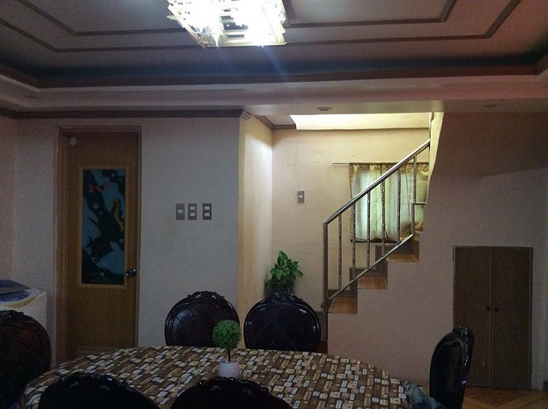

BACK
HOME

Dining Room
Breakfast, Luch and dinner is all I am doing in thedining area and since we do not have a family area in our house this also where we are having a family meeting. I don't know why we are not doing it in the Dining area while our Living room is free and available.
(NOTICE: click at the stairs)